| Visual Studio C#でRaspberry Pi リモートGPIO導入編 | |
| rapidnack | |
| (2018) | |
Visual Studio C#
で
Raspberry Pi
リモー ト GPI O 導入編
rapidnack -- 著
・以下のサイトで、本書で掲載したソースコードを入手できます。
https://github.com/Rapidnack/PigpiodIfTest
・本書中の会社名や商品名は、該当する各社の商標または登録商標です。本書中で は T M およ び® マークは省略させていただいております。
1 Visual Studio Communit y の準備
2.1 Window sに Tera Ter m をインストール
2.2 Window sに Bonjour Print Service s をインストール
2.3 Window sで Raspbia n イメージ を S D カードに書き込む
4 Raspberry P i で実行（リモートデスクトップ）
4.3 ttf-mscorefonts-installe r をインストール
5 Raspberry P i で実行（小 型 LC D ）
6.1 Read only Root-F S のセットアップ
はじめに
Raspberry P i 用にタッチパネル付き小 型 LC D が多数販売されています 。 GU I アプリケーションを作りたくなりますね 。 We bで GU I アプリケーションの作成方法を検索する と Pytho nか C+ + の例がほとんどです 。 Window s のよう に Visual Studi o で簡単 に GU I アプリケーションを作れないものでしょうか。
既 に Mon o（ .NET Framewor k 互換環境） は System.Windows.Form s の実装を完了しているので 、 Visual Studi o で作成し た Window s フォームアプリケーションをそのま ま Raspberry P i で実行できます。
これ で C #で GU I アプリケーションを作れるぞ！と喜んだのですが 、 Visual Studio 上 で GPI O を使ったデバッグができませんでした。
ところが最近 の Raspbia n の設定画面には「リモー ト GPI O 」という項目が追加されているではないですか 。 C # でこの「リモー ト GPI O 」を操作できれば 、 Visual Studi oで GPI O を使ったデバッグもできてしまいます。
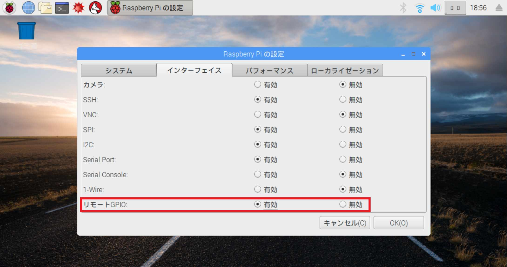
そこで 、 C # で「リモー ト GPI O 」を操作するためのライブラリを作 り GitHu b に公開しました。
https://github.com/Rapidnack/PigpiodIfTest
次のよう に Visual Studi oで Raspberry P iの GPI O を使ったデバッグができます。
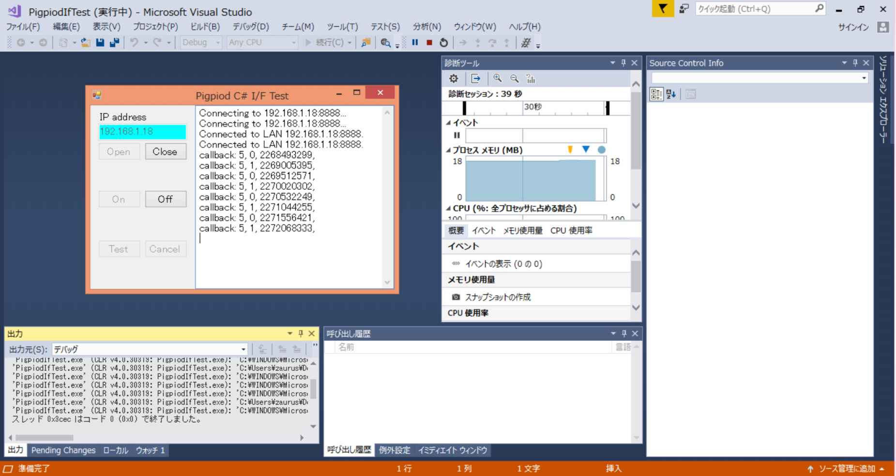
あとは、完成し た Window s フォームアプリケーションをそのま ま Raspberry P i で実行するだけです。
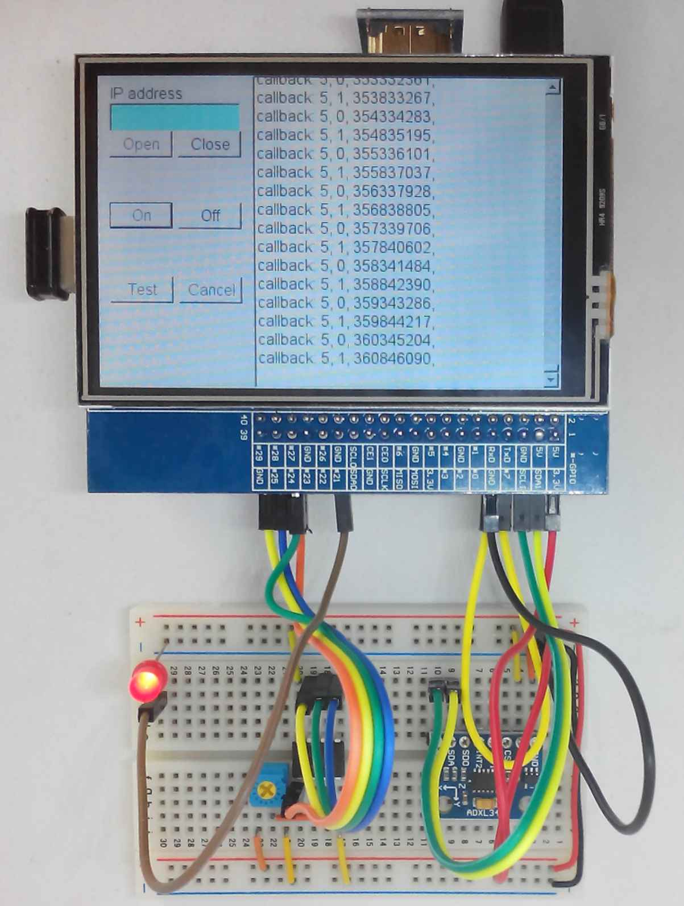
Window s フォームアプリケーションはだいぶ古い技術です が Window s 上でもまだまだ現役です 。 Windows/Mac/Linu x で共通に使えるクロスプラットフォームとしても用途が広がりました。
「リモー ト GPI O 」は次のような機能を持っています。何を作りましょうか。
http://abyz.me.uk/rpi/pigpio/pdif2.html
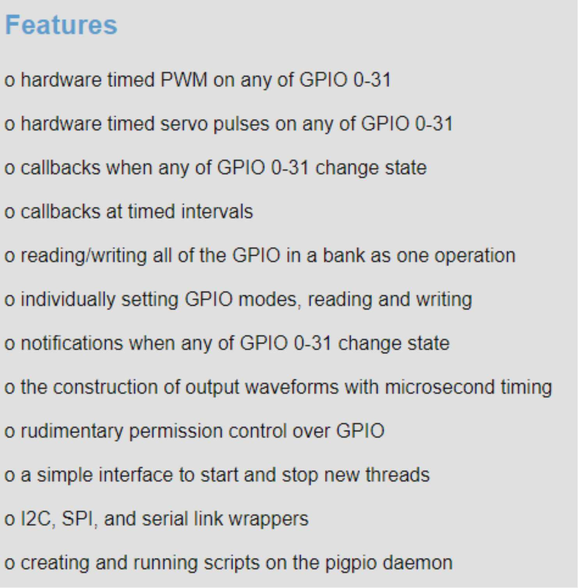
201 8年9 月 rapidnack
1 Visual Studio Communit y の準備
Visual Studio Community 201 5、 Visual Studio Community 201 7 で動作確認をしています 。 Visual Studi o をインストールしていない場合は 、 Visual Studio Communit y をインストールしてください。
https://visualstudio.microsoft.com/ja/vs/community/
Visual Studi o に慣れていない方は、簡単 な Window s フォームアプリケーションが作れるように、入門書、説明サイト等で勉強してください。
サイト例： http://www.atmarkit.co.jp/ait/articles/1704/10/news026.html
2 Raspberry P i の準備
最新 の Raspbia n をインストールして、リモー ト GPI O 等を有効にします。
2.1 Window sに Tera Ter m をインストール
Tera Ter m を使う と Linu x のコマンドをコピー＆ペーストして実行できるので 、 Raspberry P i をセットアップするのに便利です。
https://forest.watch.impress.co.jp/library/software/utf8teraterm/
2.2 Window sに Bonjour Print Service s をインストール
Bonjour Print Service s をインストールすると 、 I P アドレスの代わりに 「 raspberrypi.loca l 」 で Raspberry P i に接続できます 。 Windows 1 0 の場合はインストール不要です。
https://support.apple.com/kb/DL999?viewlocale=ja_JP&locale=ja_JP
2.3 Window sで Raspbia n イメージ を S D カードに書き込む
Raspbia n のイメージをダウンロードします。
https://www.raspberrypi.org/downloads/raspbian/
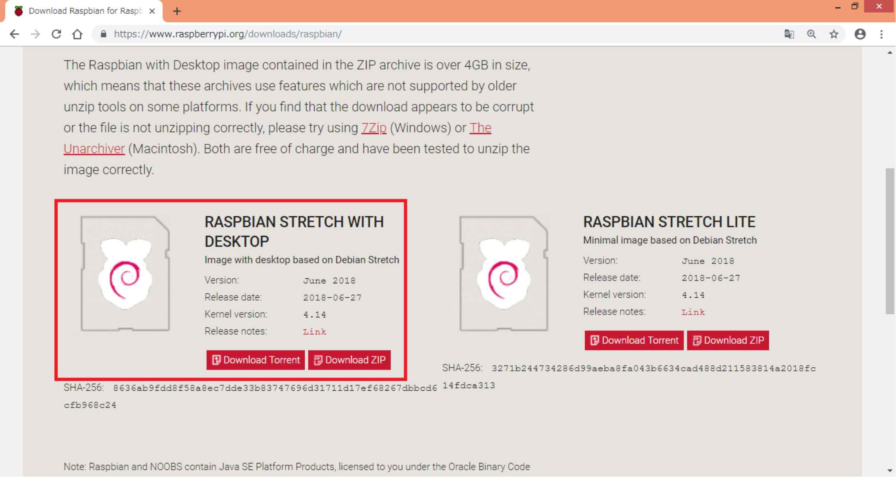
「 Etche r 」や 「 Win32 Disk Image r 」でダウンロードしたイメージ を S D カードに書き込みます。
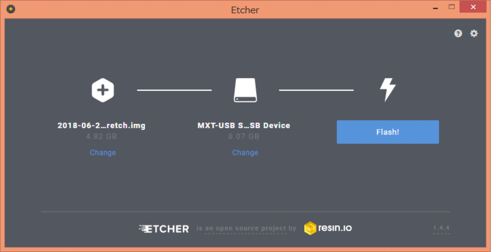
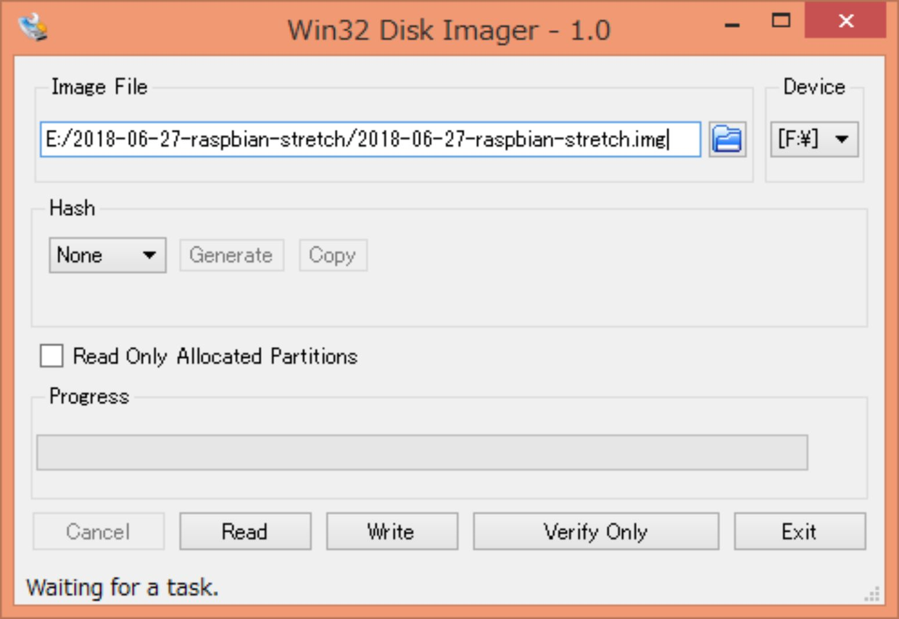
2.4 Raspbia n をセットアップ
S D カード を Raspberry P i に差し込み起動します。
国を設定すると言語、タイムゾーンが設定されます。
パスワードを変更しないと起動のたびに変更を促すダイアログが表示されるので、ここで変更しておきます。
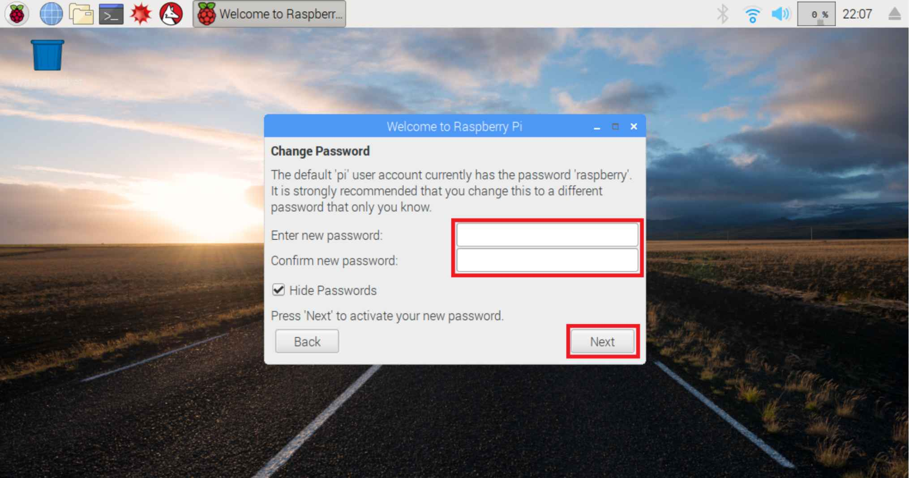
Wif i 内蔵また は Wif i ドングルを接続している場合、ここで設定します。
Raspbia n を最新に更新します。数十分掛かります。
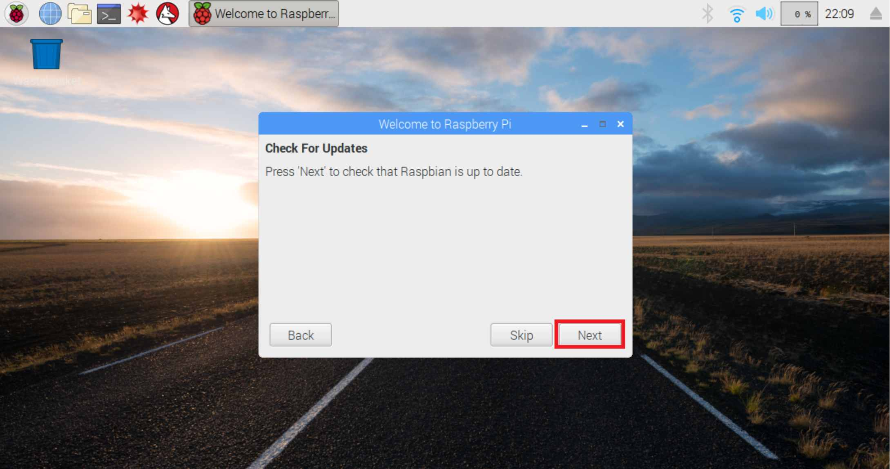
再起動する と Raspbia n が日本語になります。
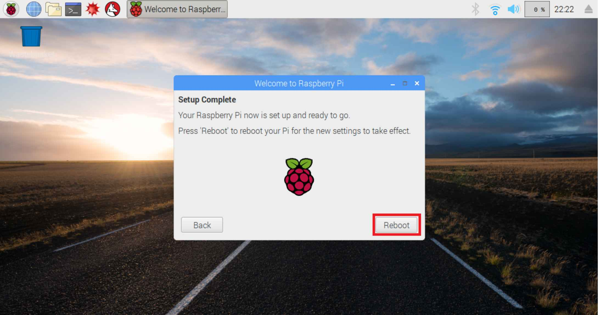
2.5 リモー ト GPI O 等を設定
メニュー「 -> 設定 -> Raspberry P i の設定」で設定画面を起動して 、 SS H、 SP I、 I2 C、 Serial Por t 、リモー ト GPI O 等使用するインターフェースを有効にします 。 Serial Consol e は有効にするとログイン時の文字列が出力されてしまうので無効にします。
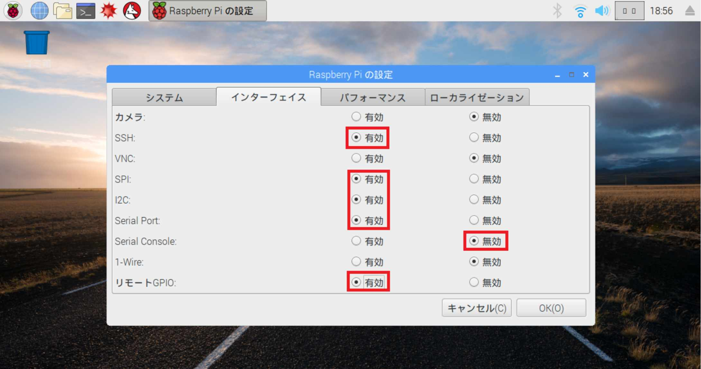
再起動します。
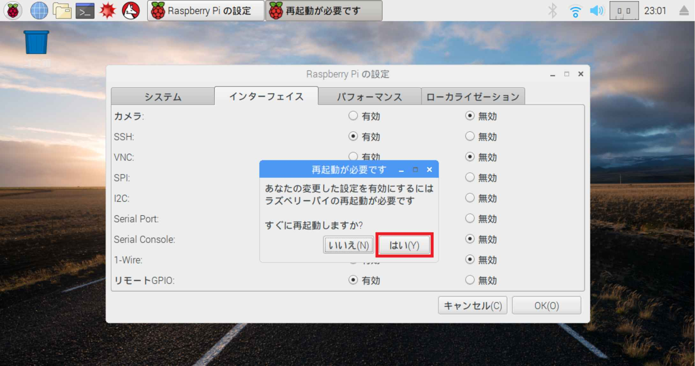
リモー ト GPI O は設定画面で有効にしただけではま だ P C などから接続できません。 LxTermina l などから次のように入力し て pigpio d サービスを起動します。
|
sudo systemctl start pigpiod |
さらに次のように入力しておけば起動時か ら P C などから接続できるようになります。
|
sudo systemctl enable pigpiod |
2.6 SS H で接続
Tera Ter m を起動し 、 Raspberry P iの I P アドレスまたは 「 raspberrypi.loca l 」を入力して接続します。
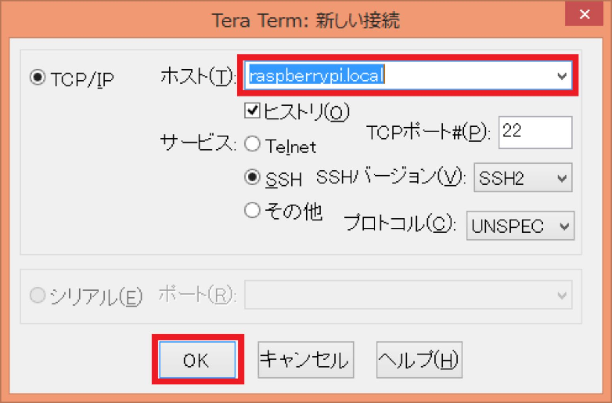
初めて接続するときは次のダイアログが表示されるので、「既存の鍵を新しい鍵で上書きす る (R ) 」にチェックを付けて「続 行 (C ) 」をクリックします。
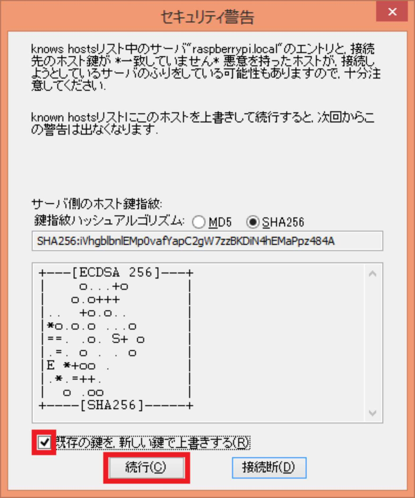
Raspberry P i のユーザー名とパスワードを入力して 「 O K 」をクリックします。
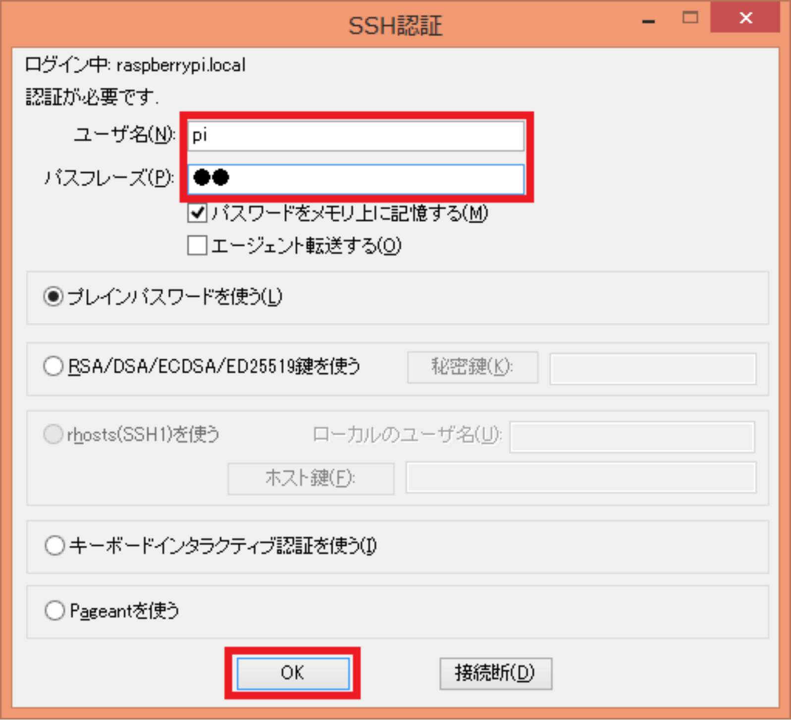
Raspberry P iに SS H で接続しました。
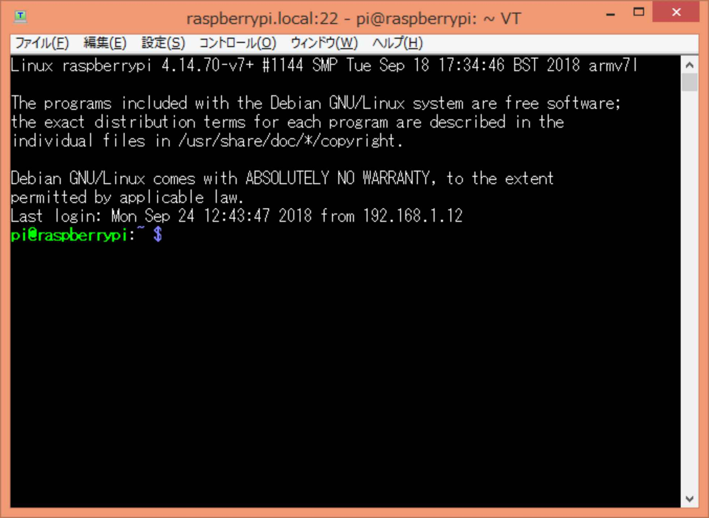
3 Visual Studi o でビルド、実行
GitHu b で公開しているライブラリに添付されているサンプルアプリケーション を Visual Studi o でビルドして実行してみましょう。
3.1 ソースコードをダウンロード
GitHu b で公開している 、 C # で「リモー ト GPI O 」を操作するためのライブラリをダウンロードします。
https://github.com/Rapidnack/PigpiodIfTest

ダウンロードし た ZI P ファイルを解凍して 、 PigpiodIfTest.sl nを Visual Studi o で開きます。
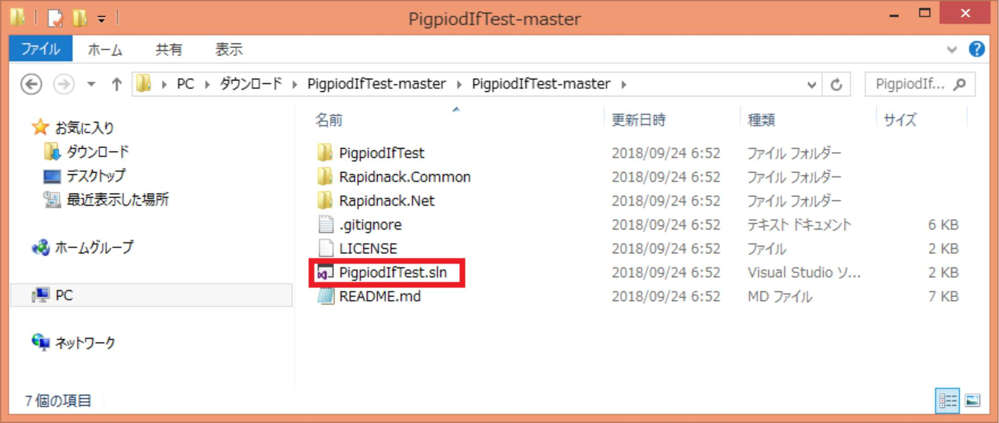
ソリューションをビルドします。
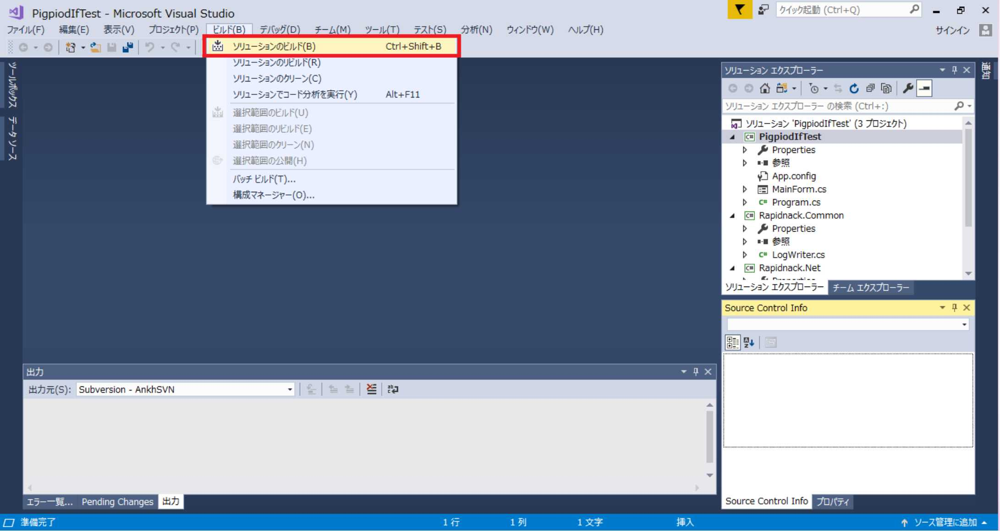
ビルド終了後、実行します。
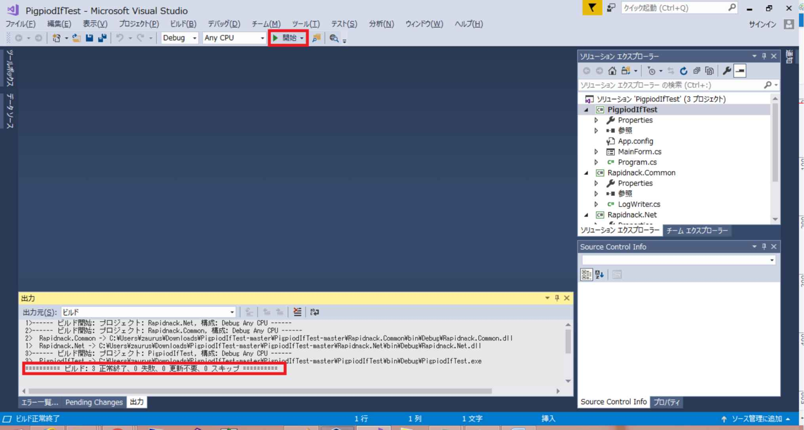
Raspberry P iの I P アドレスまたは 「 raspberrypi.loca l 」を入力して 「 Ope n 」をクリック、接続を確認してから 「 O n 」をクリックします 。2 回接続メッセージが表示されますが、これ は pigpio d がコマンド用の接続とは別にピンの値が変化したこと通知する接続も使うためです。 「 Clos e 」をクリックすると両方の接続が切れます。
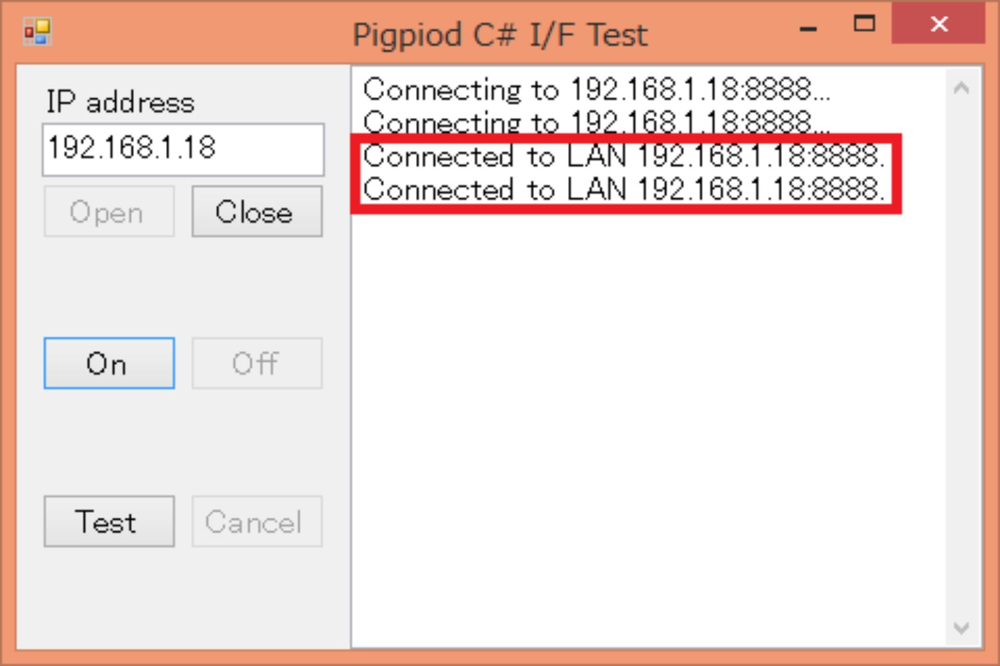
サンプルアプリケーションはピン 「 BCM 5 」 を 0. 5 秒間隔 で ON/OF F し、そのピンのレベルの変化を検出し て I P アドレスのテキストボックスの背景色を変化させます 。 LE D と抵抗をピン 「 BCM 5 」 と GN D に接続する と ON/OF F を目で確認できます。
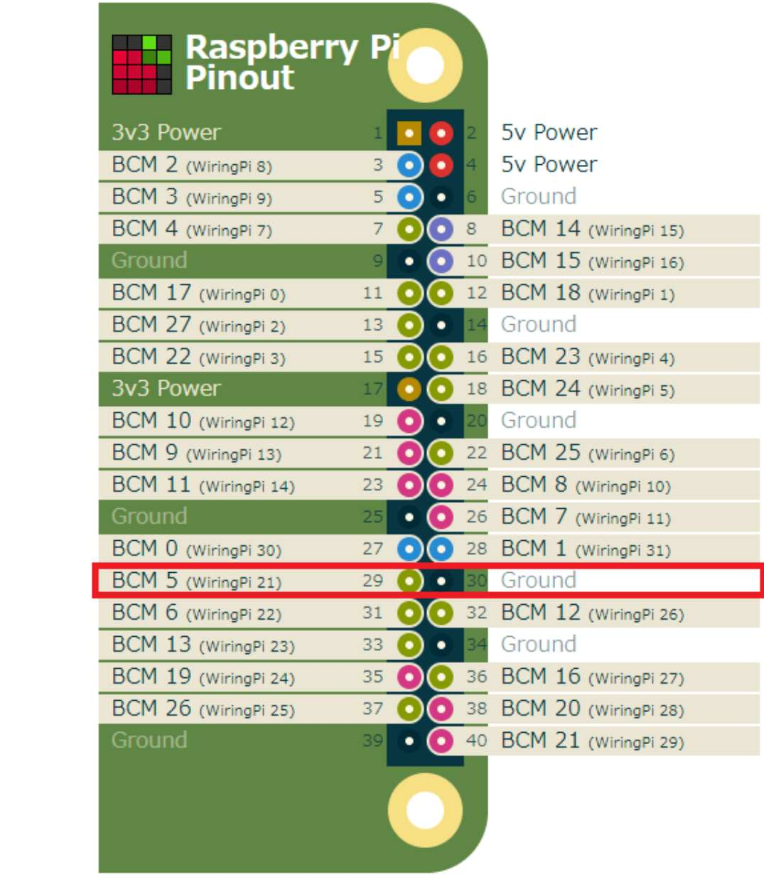
次のコードで、ピン 「 BCM 5 」 を 0. 5 秒間隔 で ON/OF F しています。
MainForm.cs: line 86
|
await Task.Run( async () => { while ( true ) { ct.ThrowIfCancellationRequested();
pigpiodIf. gpio_write (GPIO, PigpiodIf.PI_HIGH); await Task.Delay(500, ct); pigpiodIf. gpio_write (GPIO, PigpiodIf.PI_LOW); await Task.Delay(500, ct); } }, ct); |
次のコードで、ピン 「 BCM 5 」のレベルの変化を検出し て I P アドレスのテキストボックスの背景色を変化させています。
MainForm.cs: line 73
|
callback = pigpiodIf. callback (GPIO, PigpiodIf.EITHER_EDGE, (gpio, level, tick, user) => { Console.WriteLine( "callback: {0}, {1}, {2}, {3}" , gpio, level, tick, user); Invoke( new Action(() => { bool isLow = (level == PigpiodIf.PI_LOW); textBoxAddress.Enabled = isLow; textBoxAddress.BackColor = isLow ? Color.Lime : Color.Aqua; })); }); |
MainForm.cs: line 105
|
pigpiodIf. callback_cancel (callback); |
次のように 、 Visual Studi oで Raspberry P iの GPI O を使ったデバッグができます。
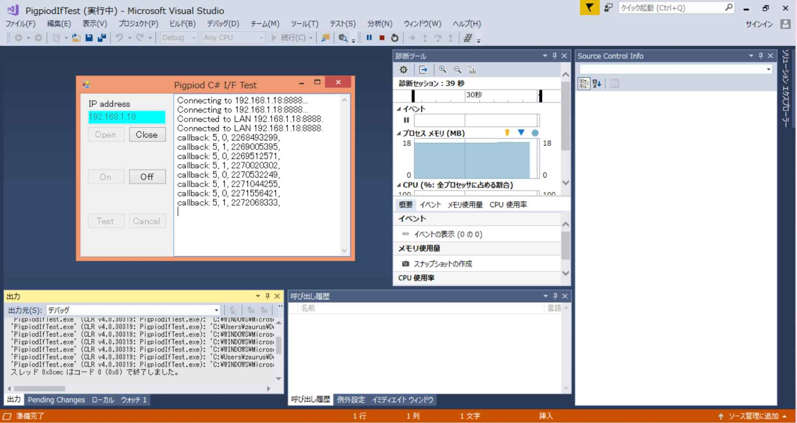
試し に 0. 5 秒の待ち時間を取り除くと、おおよ そ 5m s～ 10m s ごと に H L 切り替わります。
MainForm.cs: line 88
|
while (true) { ct.ThrowIfCancellationRequested();
pigpiodIf. gpio_write (GPIO, PigpiodIf.PI_HIGH); pigpiodIf. gpio_write (GPIO, PigpiodIf.PI_LOW); } |
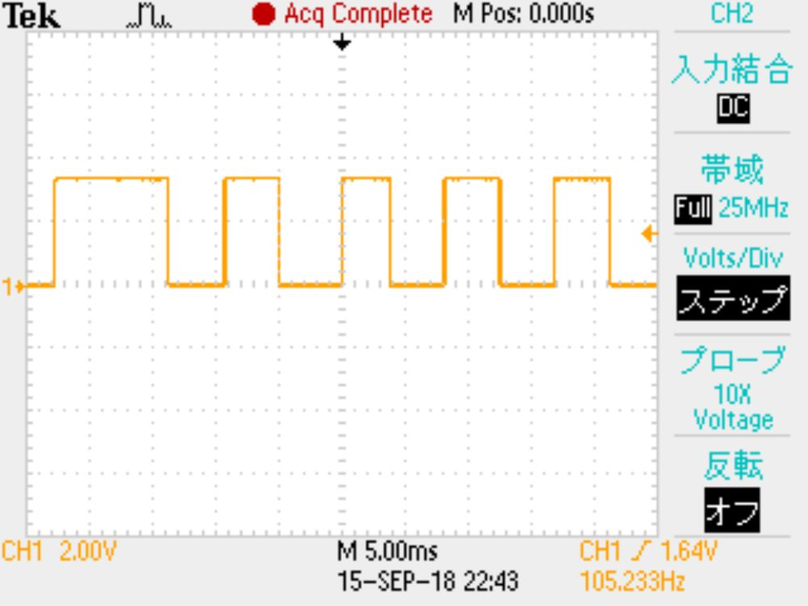
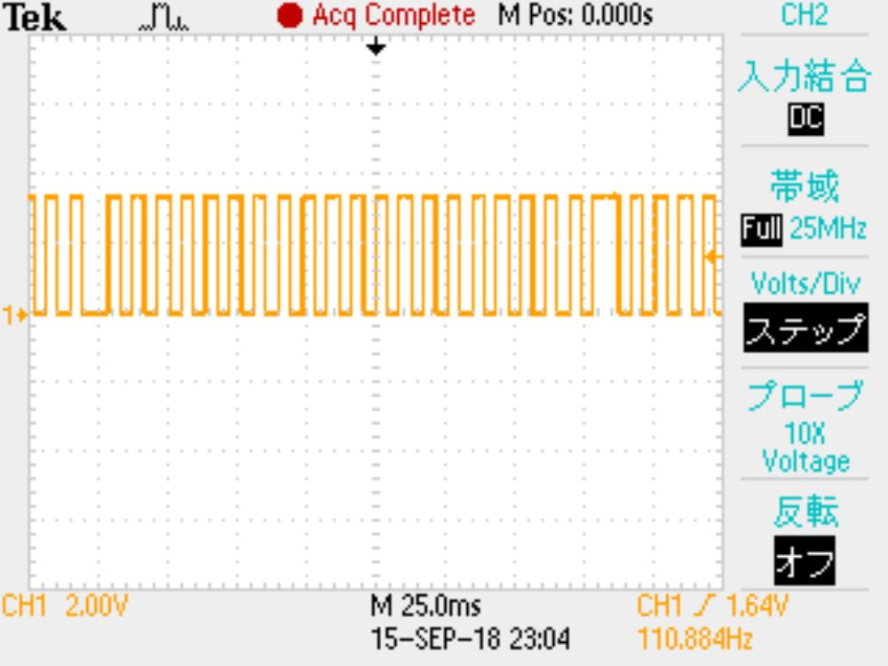
3.2 GPIO
|
set_mode |
Set a GPIO mode |
|
get_mode |
Get a GPIO mode |
|
set_pull_up_down |
Set/clear GPIO pull up/down resistor |
|
gpio_read |
Read a GPIO |
|
gpio_write |
Write a GPIO |
機能の詳細は http://abyz.me.uk/rpi/pigpio/pdif2.html を、使い方は次のテストコー ド XPiGpiodIf.t1( ) を参考にしてください。
XPiGpiodIf.t1( ) を実行するため に GPI O に何も接続する必要はありませんが 、 LE D と抵抗をピン 「 BCM 5 」 と GN D に接続するとテスト中の動作を目で確認できます。
XPiGpiodIf.cs: line 27
|
public void t1(PigpiodIf pigpiodIf, CancellationToken ct) { int v;
Console.WriteLine( "¥r¥nMode/PUD/read/write tests." );
pigpiodIf. set_mode (GPIO, PigpiodIf.PI_INPUT); v = pigpiodIf. get_mode (GPIO); CHECK(1, 1, v, 0, 0, "set mode, get mode" , ct);
pigpiodIf. set_pull_up_down (GPIO, PigpiodIf.PI_PUD_UP); v = pigpiodIf. gpio_read (GPIO); CHECK(1, 2, v, 1, 0, "set pull up down, read" , ct);
pigpiodIf. set_pull_up_down (GPIO, PigpiodIf.PI_PUD_DOWN); v = pigpiodIf. gpio_read (GPIO); CHECK(1, 3, v, 0, 0, "set pull up down, read" , ct);
pigpiodIf. gpio_write (GPIO, PigpiodIf.PI_LOW); v = pigpiodIf. get_mode (GPIO); CHECK(1, 4, v, 1, 0, "write, get mode" , ct);
v = pigpiodIf. gpio_read (GPIO); CHECK(1, 5, v, 0, 0, "read" , ct);
pigpiodIf. gpio_write (GPIO, PigpiodIf.PI_HIGH); v = pigpiodIf. gpio_read (GPIO); CHECK(1, 6, v, 1, 0, "write, read" , ct); } |
3.3 PWM
|
set_PWM_dutycycle |
Start/stop PWM pulses on a GPIO |
|
get_PWM_dutycycle |
Get the PWM dutycycle in use on a GPIO |
|
set_PWM_range |
Configure PWM range for a GPIO |
|
get_PWM_range |
Get configured PWM range for a GPIO |
|
set_PWM_frequency |
Configure PWM frequency for a GPIO |
|
get_PWM_frequency |
Get configured PWM frequency for a GPIO |
|
get_PWM_real_range |
Get underlying PWM range for a GPIO |
機能の詳細は http://abyz.me.uk/rpi/pigpio/pdif2.html を、使い方は次のテストコー ド XPiGpiodIf.t2( ) を参考にしてください。
XPiGpiodIf.t2( ) を実行するため に GPI O に何も接続する必要はありませんが 、 LE D と抵抗をピン 「 BCM 5 」 と GN D に接続するとテスト中の動作を目で確認できます。
XPiGpiodIf.cs: line 57
|
public void t2(PigpiodIf pigpiodIf, CancellationToken ct) { PigpiodIf.Callback callback = null ; try { int dc, f, r, rr, oc;
Console.WriteLine( "¥r¥nPWM dutycycle/range/frequency tests." );
pigpiodIf. set_PWM_range (GPIO, 255); pigpiodIf. set_PWM_frequency (GPIO, 0); f = pigpiodIf. get_PWM_frequency (GPIO); CHECK(2, 1, f, 10, 0, "set PWM range, set/get PWM frequency" , ct);
int t2_count = 0; callback = pigpiodIf.callback(GPIO, PigpiodIf.EITHER_EDGE, (gpio, level, tick, user) => { t2_count++; });
pigpiodIf. set_PWM_dutycycle (GPIO, 0); dc = pigpiodIf. get_PWM_dutycycle (GPIO); CHECK(2, 2, dc, 0, 0, "get PWM dutycycle" , ct);
pigpiodIf.time_sleep(0.5); /* allow old notifications to flush */ oc = t2_count; pigpiodIf.time_sleep(2); f = t2_count - oc; CHECK(2, 3, f, 0, 0, "set PWM dutycycle, callback" , ct);
pigpiodIf. set_PWM_dutycycle (GPIO, 128); dc = pigpiodIf. get_PWM_dutycycle (GPIO); CHECK(2, 4, dc, 128, 0, "get PWM dutycycle" , ct);
pigpiodIf.time_sleep(0.2); oc = t2_count; pigpiodIf.time_sleep(2); f = t2_count - oc; CHECK(2, 5, f, 40, 5, "set PWM dutycycle, callback" , ct);
pigpiodIf. set_PWM_frequency (GPIO, 100); f = pigpiodIf. get_PWM_frequency (GPIO); CHECK(2, 6, f, 100, 0, "set/get PWM frequency" , ct);
pigpiodIf.time_sleep(0.2); oc = t2_count; pigpiodIf.time_sleep(2); f = t2_count - oc; CHECK(2, 7, f, 400, 1, "callback" , ct);
pigpiodIf. set_PWM_frequency (GPIO, 1000); f = pigpiodIf. get_PWM_frequency (GPIO); CHECK(2, 8, f, 1000, 0, "set/get PWM frequency" , ct);
pigpiodIf.time_sleep(0.2); oc = t2_count; pigpiodIf.time_sleep(2); f = t2_count - oc; CHECK(2, 9, f, 4000, 1, "callback" , ct);
r = pigpiodIf. get_PWM_range (GPIO); CHECK(2, 10, r, 255, 0, "get PWM range" , ct);
rr = pigpiodIf. get_PWM_real_range (GPIO); CHECK(2, 11, rr, 200, 0, "get PWM real range" , ct);
pigpiodIf. set_PWM_range (GPIO, 2000); r = pigpiodIf. get_PWM_range (GPIO); CHECK(2, 12, r, 2000, 0, "set/get PWM range" , ct);
rr = pigpiodIf. get_PWM_real_range (GPIO); CHECK(2, 13, rr, 200, 0, "get PWM real range" , ct); } finally { pigpiodIf. set_PWM_dutycycle (GPIO, 0);
pigpiodIf.callback_cancel(callback); } } |
3.4 Serial
|
serial_open |
Opens a serial device |
|
serial_close |
Closes a serial device |
|
serial_write_byte |
Writes a byte to a serial device |
|
serial_read_byte |
Reads a byte from a serial device |
|
serial_write |
Writes bytes to a serial device |
|
serial_read |
Reads bytes from a serial device |
|
serial_data_available |
Returns number of bytes ready to be read |
機能の詳細は http://abyz.me.uk/rpi/pigpio/pdif2.html を、使い方は次のテストコー ド XPiGpiodIf.ta( ) を参考にしてください。
XPiGpiodIf.ta( ) を実行するには 、 TX Dと RX D をショートして送信データをループバックする必要があります。
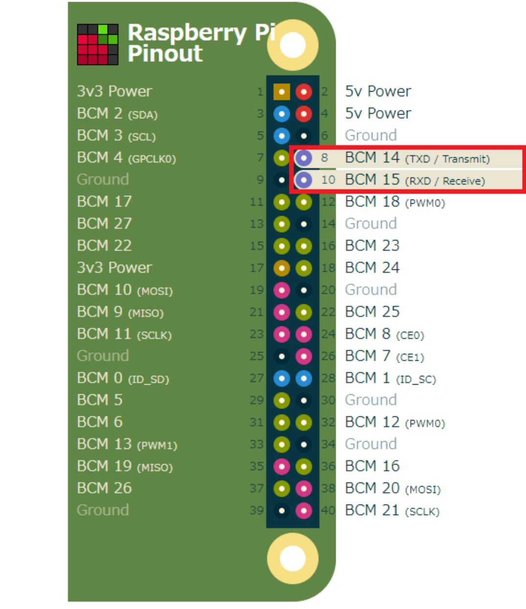
XPiGpiodIf.cs: line 575
|
public void ta(PigpiodIf pigpiodIf, CancellationToken ct) { int h, b, e; string TEXT; byte [] recv = new byte [2048];
Console.WriteLine( "¥r¥nSerial link tests." );
/* this test needs RXD and TXD to be connected */
h = pigpiodIf. serial_open ( "/dev/ttyAMA0" , 57600, 0);
CHECK(10, 1, h, 0, 0, "serial open" , ct);
pigpiodIf.time_sleep(0.1); /* allow time for transmission */
b = pigpiodIf. serial_read ((UInt32)h, recv); /* flush buffer */
b = pigpiodIf. serial_data_available ((UInt32)h); CHECK(10, 2, b, 0, 0, "serial data available" , ct);
TEXT = @"
To be, or not to be, that is the question - Whether 'tis Nobler in the mind to suffer
The Slings and Arrows of outrageous Fortune, Or to take Arms against a Sea of troubles, " ; var bytes = System.Text.Encoding.UTF8.GetBytes(TEXT); e = pigpiodIf. serial_write ((UInt32)h, bytes); CHECK(10, 3, e, 0, 0, "serial write" , ct);
e = pigpiodIf. serial_write_byte ((UInt32)h, 0xAA); e = pigpiodIf. serial_write_byte ((UInt32)h, 0x55); e = pigpiodIf. serial_write_byte ((UInt32)h, 0x00); e = pigpiodIf. serial_write_byte ((UInt32)h, 0xFF);
CHECK(10, 4, e, 0, 0, "serial write byte" , ct);
pigpiodIf.time_sleep(0.1); /* allow time for transmission */
b = pigpiodIf. serial_data_available ((UInt32)h); CHECK(10, 5, b, bytes.Length + 4, 0, "serial data available" , ct);
recv = new byte [bytes.Length]; b = pigpiodIf. serial_read ((UInt32)h, recv); CHECK(10, 6, b, bytes.Length, 0, "serial read" , ct); recv = recv.Take(b).ToArray(); string text = System.Text.Encoding.UTF8.GetString(recv); CHECK(10, 7, string .Compare(TEXT, text), 0, 0, "serial read" , ct);
b = pigpiodIf. serial_read_byte ((UInt32)h); CHECK(10, 8, b, 0xAA, 0, "serial read byte" , ct);
b = pigpiodIf. serial_read_byte ((UInt32)h); CHECK(10, 9, b, 0x55, 0, "serial read byte" , ct);
b = pigpiodIf. serial_read_byte ((UInt32)h); CHECK(10, 10, b, 0x00, 0, "serial read byte" , ct);
b = pigpiodIf. serial_read_byte ((UInt32)h); CHECK(10, 11, b, 0xFF, 0, "serial read byte" , ct);
b = pigpiodIf. serial_data_available ((UInt32)h); CHECK(10, 12, b, 0, 0, "serial data availabe" , ct);
e = pigpiodIf. serial_close ((UInt32)h); CHECK(10, 13, e, 0, 0, "serial close" , ct); } |
3.5 I2C
|
i2c_open |
Opens an I2C device |
|
i2c_close |
Closes an I2C device |
|
i2c_write_byte |
smbus write byte |
|
i2c_read_byte |
smbus read byte |
|
i2c_write_byte_data |
smbus write byte data |
|
i2c_read_byte_data |
smbus read byte data |
|
i2c_write_block_data |
smbus write block data |
|
i2c_read_block_data |
smbus read block data |
|
i2c_write_i2c_block_data |
smbus write I2C block data |
|
i2c_read_i2c_block_data |
smbus read I2C block data |
|
i2c_read_device |
Reads the raw I2C device |
|
i2c_write_device |
Writes the raw I2C device |
機能の詳細は http://abyz.me.uk/rpi/pigpio/pdif2.html を、使い方は次のテストコー ド XPiGpiodIf.tb( ) を参考にしてください。
XPiGpiodIf.tb( ) を実行するには 、 ADXL34 5 を接続する必要があります。
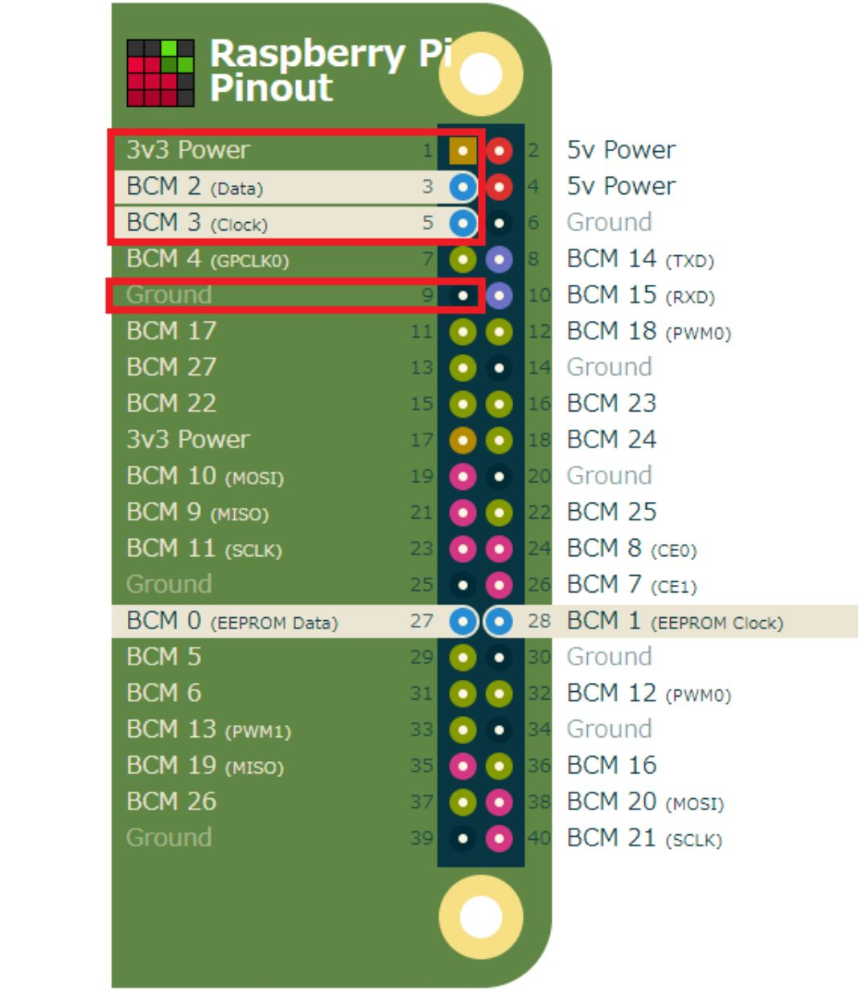
XPiGpiodIf.cs: line 646
|
public void tb(PigpiodIf pigpiodIf, CancellationToken ct) { int h, e, b; string exp; string buf; byte [] bytes = new byte [128];
Console.WriteLine( "¥r¥nSMBus / I2C tests." );
/* this test requires an ADXL345 on I2C bus 1 addr 0x53 */
h = pigpiodIf. i2c_open (1, 0x53, 0); CHECK(11, 1, h, 0, 0, "i2c open" , ct);
e = pigpiodIf. i2c_write_device ((UInt32)h, new byte [] { 0x00 }); /* move to known register */ CHECK(11, 2, e, 0, 0, "i2c write device" , ct);
bytes = new byte [1]; b = pigpiodIf. i2c_read_device ((UInt32)h, bytes); CHECK(11, 3, b, 1, 0, "i2c read device" , ct); CHECK(11, 4, bytes[0], 0xE5, 0, "i2c read device" , ct);
b = pigpiodIf. i2c_read_byte ((UInt32)h); CHECK(11, 5, b, 0xE5, 0, "i2c read byte" , ct);
b = pigpiodIf. i2c_read_byte_data ((UInt32)h, 0); CHECK(11, 6, b, 0xE5, 0, "i2c read byte data" , ct);
b = pigpiodIf. i2c_read_byte_data ((UInt32)h, 48); CHECK(11, 7, b, 2, 0, "i2c read byte data" , ct);
exp = "¥x1D[aBcDeFgHjKM]" ; bytes = System.Text.Encoding.UTF8.GetBytes(exp);
e = pigpiodIf. i2c_write_device ((UInt32)h, bytes); CHECK(11, 8, e, 0, 0, "i2c write device" , ct);
e = pigpiodIf. i2c_write_device ((UInt32)h, new byte [] { 0x1D }); bytes = new byte [bytes.Length - 1]; b = pigpiodIf. i2c_read_device ((UInt32)h, bytes); buf = System.Text.Encoding.UTF8.GetString(bytes); CHECK(11, 9, b, buf.Length, 0, "i2c read device" , ct); CHECK(11, 10, string .Compare(buf, 0, exp, 1, buf.Length - 1), 0, 0, "i2c read device" , ct);
if ( string .Compare(buf, 0, exp, 1, buf.Length - 1) != 0) Console.WriteLine( "got [{0}] expected [{1}]" , buf, exp.Substring(1));
e = pigpiodIf. i2c_write_byte_data ((UInt32)h, 0x1d, 0xAA); CHECK(11, 11, e, 0, 0, "i2c write byte data" , ct);
b = pigpiodIf. i2c_read_byte_data ((UInt32)h, 0x1d); CHECK(11, 12, b, 0xAA, 0, "i2c read byte data" , ct);
e = pigpiodIf. i2c_write_byte_data ((UInt32)h, 0x1d, 0x55); CHECK(11, 13, e, 0, 0, "i2c write byte data" , ct);
b = pigpiodIf. i2c_read_byte_data ((UInt32)h, 0x1d); CHECK(11, 14, b, 0x55, 0, "i2c read byte data" , ct);
exp = "[1234567890#]" ; bytes = System.Text.Encoding.UTF8.GetBytes(exp);
e = pigpiodIf. i2c_write_block_data ((UInt32)h, 0x1C, bytes); CHECK(11, 15, e, 0, 0, "i2c write block data" , ct);
e = pigpiodIf. i2c_write_device ((UInt32)h, new byte [] { 0x1D }); b = pigpiodIf. i2c_read_device ((UInt32)h, bytes); buf = System.Text.Encoding.UTF8.GetString(bytes); CHECK(11, 16, b, buf.Length, 0, "i2c read device" , ct); CHECK(11, 17, string .Compare(buf, 0, exp, 0, buf.Length), 0, 0, "i2c read device" , ct);
if ( string .Compare(buf, 0, exp, 0, buf.Length) != 0) Console.WriteLine( "got [{0}] expected [{1}]" , buf, exp);
b = pigpiodIf. i2c_read_i2c_block_data ((UInt32)h, 0x1D, bytes); buf = System.Text.Encoding.UTF8.GetString(bytes); CHECK(11, 18, b, buf.Length, 0, "i2c read i2c block data" , ct); CHECK(11, 19, string .Compare(buf, 0, exp, 0, buf.Length), 0, 0, "i2c read i2c block data" , ct);
if ( string .Compare(buf, 0, exp, 0, buf.Length) != 0) Console.WriteLine( "got [{0}] expected [{1}]" , buf, exp);
exp = "(-+=;:,<>!%)" ; bytes = System.Text.Encoding.UTF8.GetBytes(exp);
e = pigpiodIf. i2c_write_i2c_block_data ((UInt32)h, 0x1D, bytes); CHECK(11, 20, e, 0, 0, "i2c write i2c block data" , ct);
b = pigpiodIf. i2c_read_i2c_block_data ((UInt32)h, 0x1D, bytes); buf = System.Text.Encoding.UTF8.GetString(bytes); CHECK(11, 21, b, buf.Length, 0, "i2c read i2c block data" , ct); CHECK(11, 22, string .Compare(buf, 0, exp, 0, buf.Length), 0, 0, "i2c read i2c block data" , ct);
if ( string .Compare(buf, 0, exp, 0, buf.Length) != 0) Console.WriteLine( "got [{0}] expected [{1}]" , buf, exp);
e = pigpiodIf. i2c_close ((UInt32)h); CHECK(11, 23, e, 0, 0, "i2c close" , ct); } |
3.6 SPI
|
spi_open |
Opens a SPI device |
|
spi_close |
Closes a SPI device |
|
spi_xfer |
Transfers bytes with a SPI device |
機能の詳細は http://abyz.me.uk/rpi/pigpio/pdif2.html を、使い方は次のテストコー ド XPiGpiodIf.tc( ) を参考にしてください。
XPiGpiodIf.tc( ) を実行するには 、 MCP320 2 を接続する必要があります。
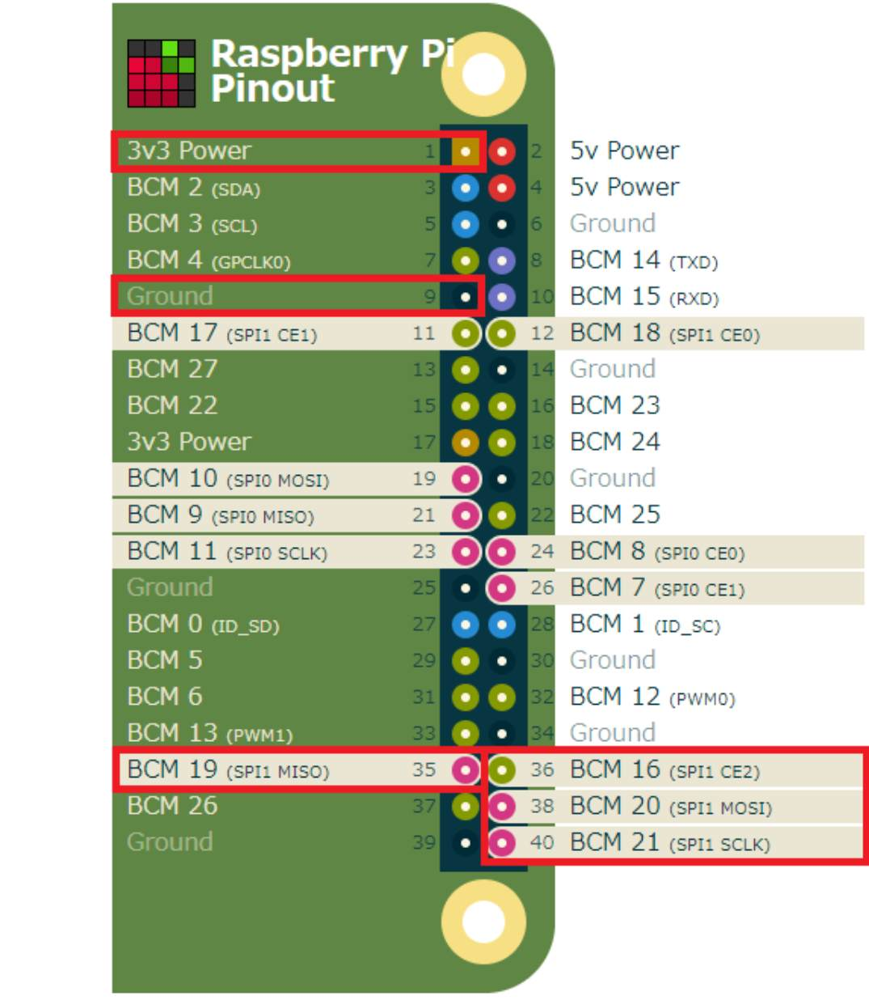
XPiGpiodIf.cs: line 746
|
public void tc(PigpiodIf pigpiodIf, CancellationToken ct) { int h, x, b, e; byte [] buf = new byte [128];
Console.WriteLine( "¥r¥nSPI tests." );
/* this test requires a MCP3202 on SPI1 channel 2 */
h = pigpiodIf. spi_open (2, 50000, 256 + 0); CHECK(12, 1, h, 0, 0, "spi open" , ct);
for (x = 0; x < 5; x++) { buf = new byte [] { 0x01, 0x80, 0x00 }; b = pigpiodIf. spi_xfer ((UInt32)h, buf, buf); CHECK(12, 2, b, 3, 0, "spi xfer" , ct); if (b == 3) { pigpiodIf.time_sleep(1.0); Console.WriteLine( "{0} " , ((buf[1] & 0x0F) * 256) | buf[2]); } }
e = pigpiodIf. spi_close ((UInt32)h); CHECK(12, 99, e, 0, 0, "spi close" , ct); } |
4 Raspberry P i で実行（リモートデスクトップ）
Visual Studi o で動作を確認できたの で . Raspberry P i にコピーして実行してみます 。 Raspberry P i のデスクトップをリモートデスクトップとし て Window s の画面に表示すると 、 Window s のエクスプローラ と Raspberry P i のファイルマネージャとの間でコピー＆ペーストができ便利です。フォルダごとはダメなようなの で ZI P ファイルに纏めてからコピー＆ペーストします。
4.1 リモートデスクトップをインストール
Raspberry P iに xrd p をインストールします 。 xrd p をインストールする前 に tightvncserve r をインストールするとネットワーク関連の設定作業を省略できます。
|
sudo apt-get install tightvncserver sudo apt-get install xrdp |
4.2 Mon o をインストール
.NE T の実行ファイル を Raspberry P i で実行するため 、 Mon o をインストールします 。 Raspbia n のパッケージに含まれ る Mon o は古いので、公式サイトから取得できるようにします 。 2018/10/0 4 現在 の Stabl e版 5.1 4 はテキストボックスの表示に不具合があるので一つ前 の 5.1 2 を選択します。
https://www.mono-project.com/download/stable/#download-lin-raspbian
|
sudo apt install apt-transport-https dirmngr sudo apt-key adv --keyserver hkp://keyserver.ubuntu.com:80 --recv-keys 3FA7E0328081BFF6A14DA29AA6A19B38D3D831EF echo "deb https://download.mono-project.com/repo/debian stable-raspbianstretch/snapshots/5.12 main" | sudo tee /etc/apt/sources.list.d/mono-snapshot_5_12.list sudo apt update |
「 sudo apt updat e 」で警告が表示されますが問題ありません 。 Mon o の開発環 境 MonoDevelo p をインストールすること で .NE T 関連をまとめてインストールします。
|
sudo apt-get install monodevelop |
ホームディレクトリ に Project s ディレクトリを作ります。
|
cd mkdir Projects |
4.3 ttf-mscorefonts-installe r をインストール
Visual Studi o でビルドし た GU I アプリケーションの実行に必要なフォントをインストールします。
|
sudo apt-get install ttf-mscorefonts-installer |
4.4 リモートデスクトップで実行
Window s の「リモートデスクトップ接続」を起動し 、 Raspberry P iの I P アドレスまたは 「 raspberrypi.loca l 」を入力して「接 続 (N ) 」をクリックします。
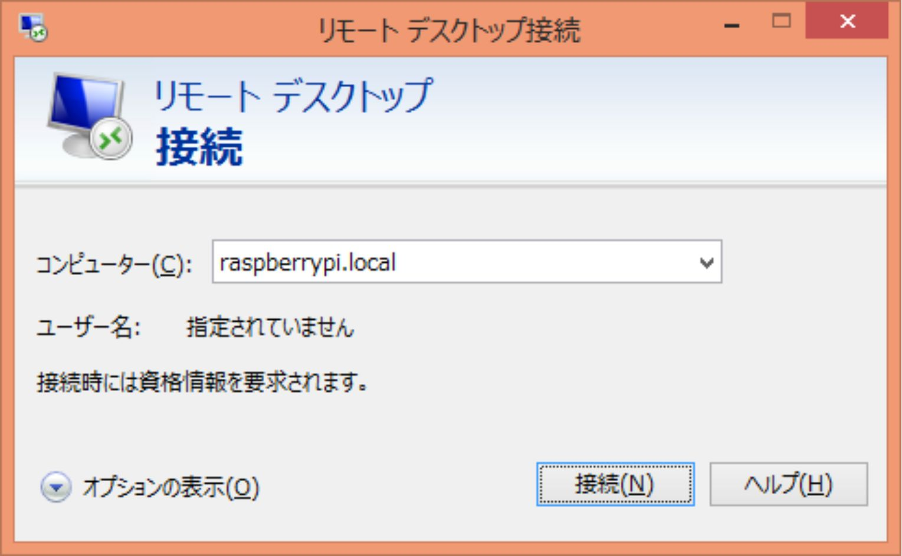
ログイン画面が表示されるので 、 Raspberry P i のユーザー名とパスワードを入力して 「 O K 」をクリックします。
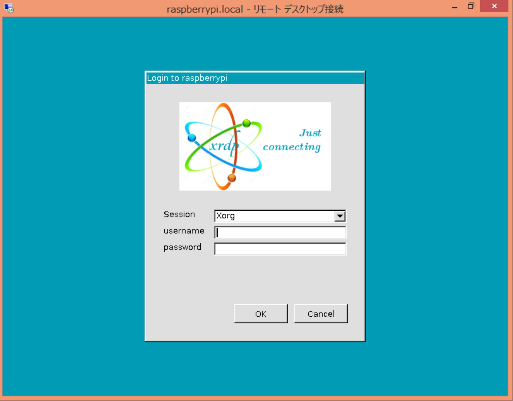
Raspberry P i のデスクトップ が Window s 上に表示されます。
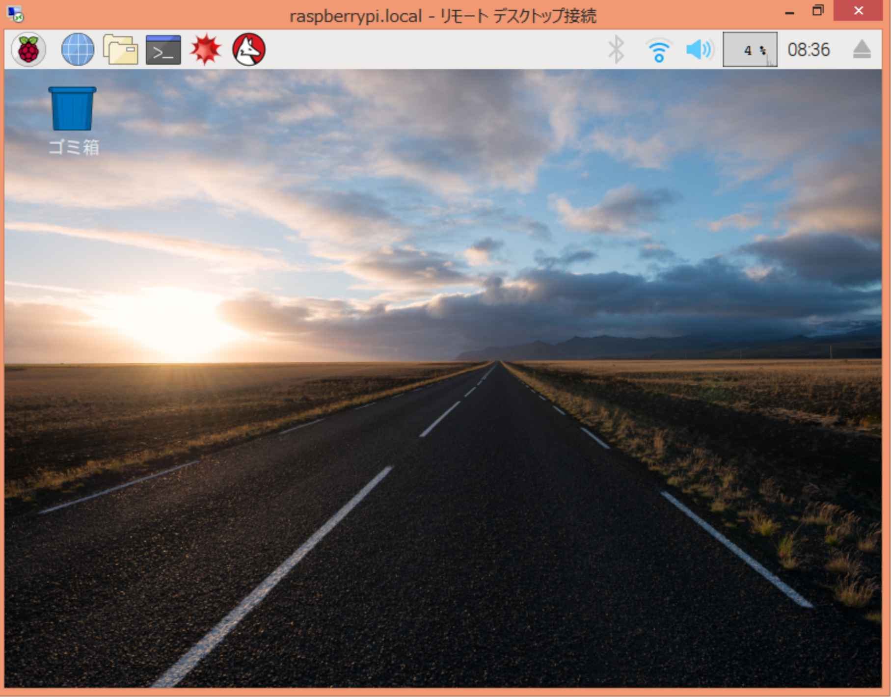
ファイルマネージャを表示して 、 Project s ディレクトリを開いておきます。
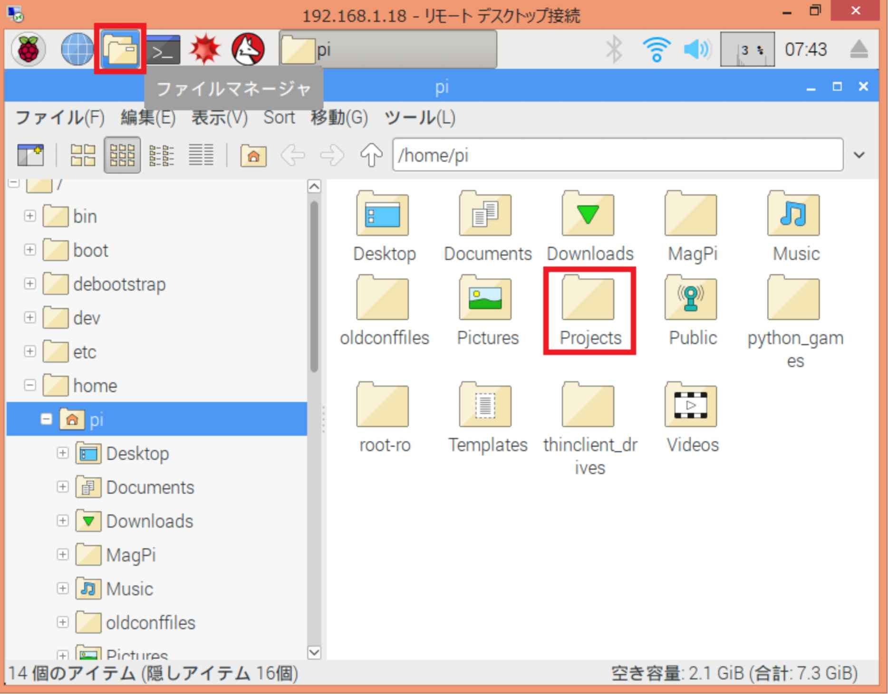
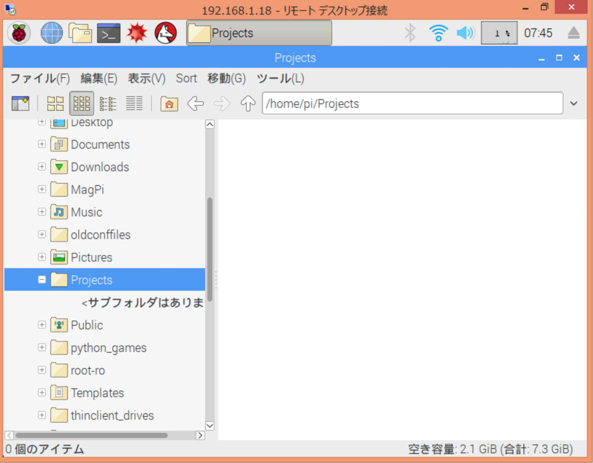
.NE T の実行ファイル を Raspberry P i にコピー＆ペーストするた め ZI P ファイルに纏めます。今回はソリューションごと纏めます。まずソリューションファイ ル PigpiodIfTest.sl n のあるフォルダから１つ上に移動し、
フォル ダ PigpiodIfTest-maste r を右クリックして 、 ZI P ファイルに纏めます。
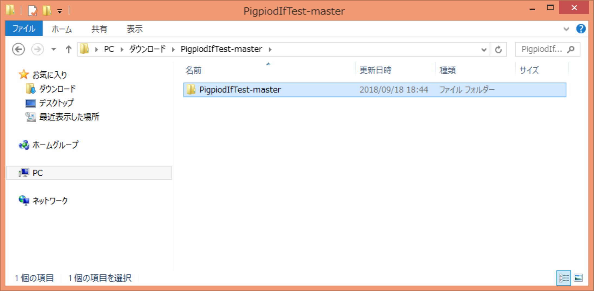
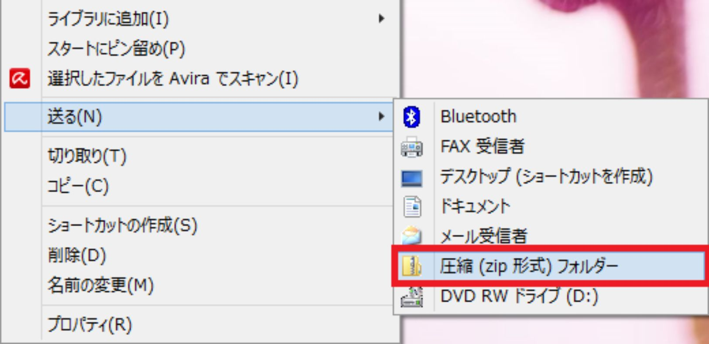
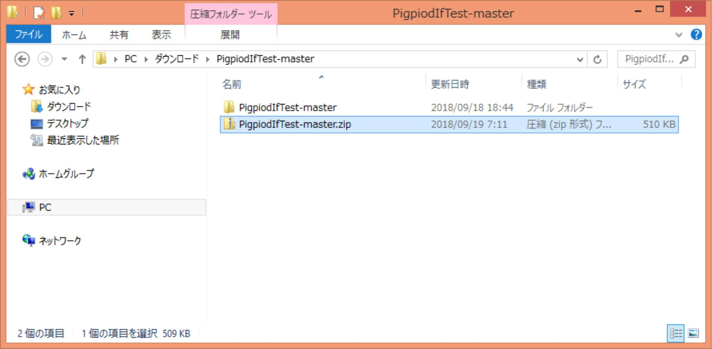
Window s のエクスプローラでコピー 、 Raspberry P i のファイルマネージャでペーストすると 、 ZI P ファイル が Raspberry P i にコピーできます。
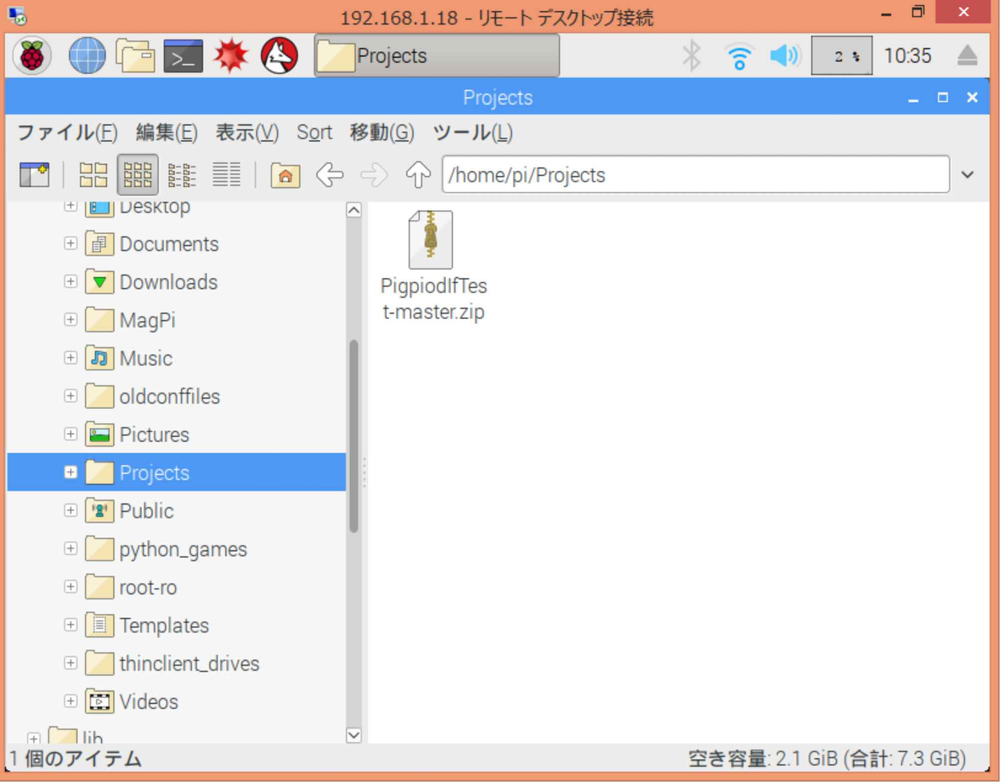
ZI P ファイルを右クリックして解凍します。
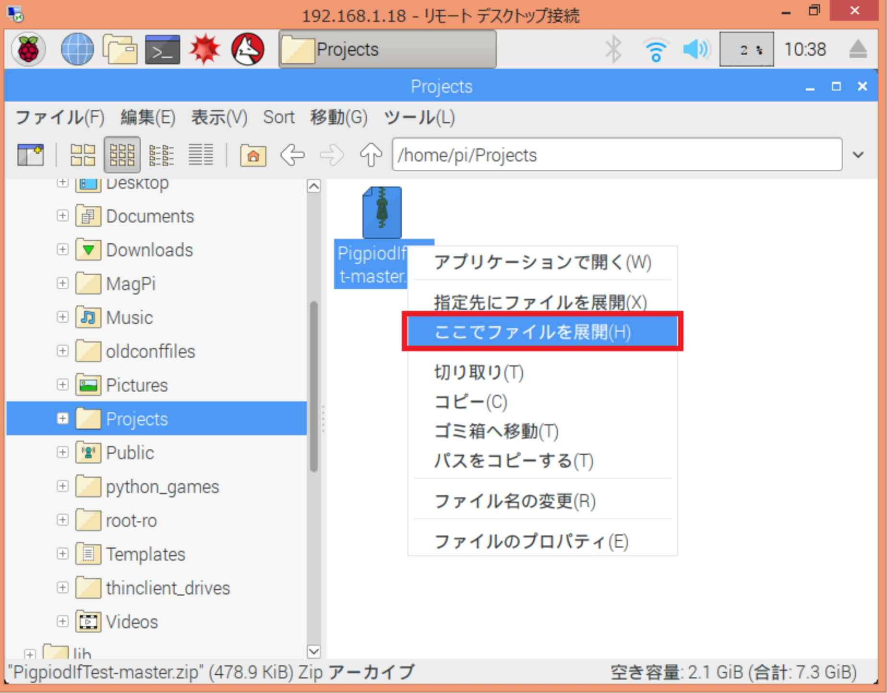
解凍したディレクトリ の PigpiodIfTest-master/PigpiodIfTest/bin/Debu g に移動し 、 PigpiodIfTest.ex e をダブルクリックします。
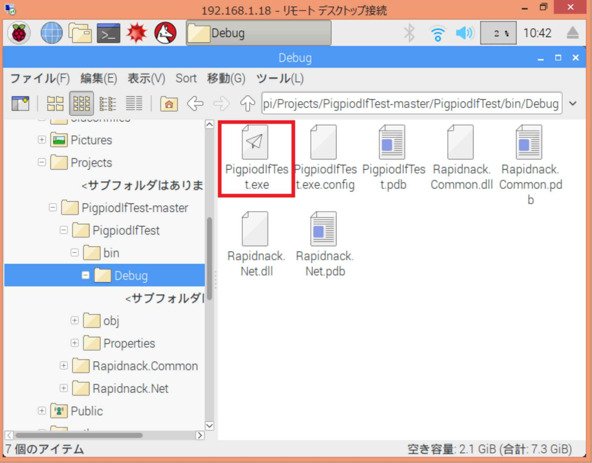
EX E ファイルの実行方法を設定します。以 後 EX E ファイルをダブルクリックするだけで実行できるようになります。
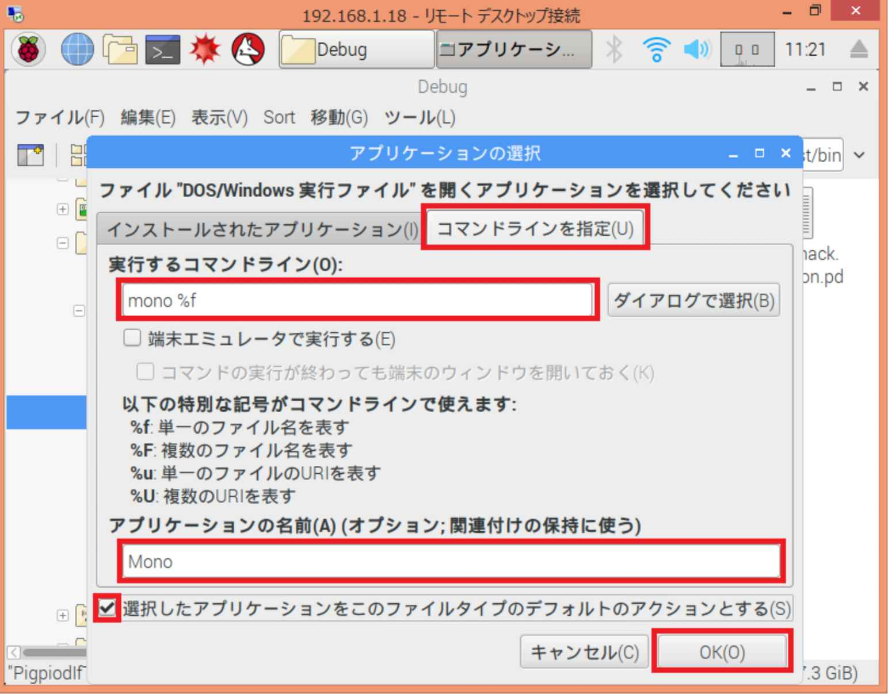
I P アドレスを空欄のまま 「 Ope n 」をクリック、接続を確認してから 「 O n 」をクリックします。見た目はまる で Windows 9 8 ですが 、 Window s でビルドし た GU I アプリケーションがそのま ま Raspberry P i で動作しています。
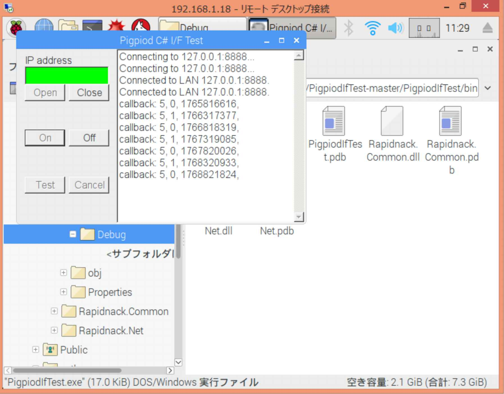
5 Raspberry P i で実行（小 型 LC D ）
Raspberry P i のリモートデスクトップで実行できることが確認できました。次 は Raspberry P i に小 型 LC D を接続し 、 GU I アプリケーションが起動時に全画面表示で実行されるようにしましょう。
Alt+F1 1 キーで全画面表示を解除できます。
5.1 3. 5 イン チ HDMI LCD
HDM I 接続 の 3. 5 イン チ LC D のセットアップ例です。 使用したLCDはGPIOのピンがすべて横に出ているため、簡単に接続できます。 Tera Ter m か ら SS H で接続してセットアップします。
使用したLCDはタッチパネルの割り込みピンがBCM 25なので、SPI1（Auxiliary SPI）と共存できます。
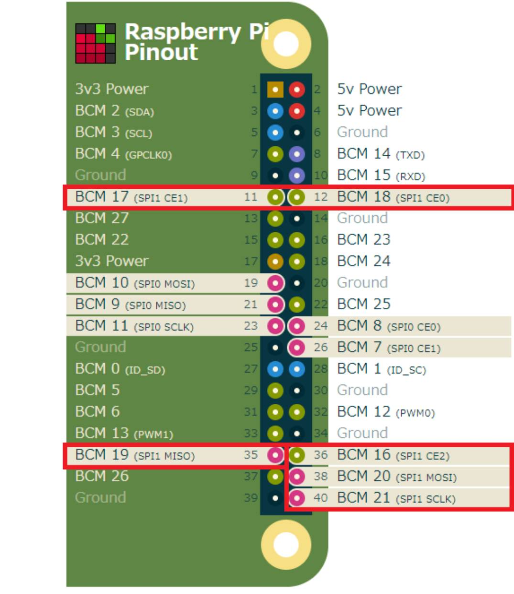
メーカー提供のセットアップスクリプトを使うと色々ファイルが書き換わってしまうので、手作業でセットアップします。
/boot/cmdline.txtを編集して、コンソールのフォントを変更します。
|
sudo vi /boot/cmdline.txt |
/boot/cmdline.txtの行末に追加：
|
fbcon=font:ProFont6x11 |
/boot/config.tx t を編集して、 画面サイズを変更します。
|
sudo vi /boot/config.txt |
/boot/config.tx t に追加：
|
hdmi_group=2 hdmi_mode=87 hdmi_cvt 480 320 60 6 0 0 0 |
/boot/config.tx t を編集して、タッチパネルのカーネルモジュールを有効にします。
|
sudo vi /boot/config.txt |
/boot/config.tx t に追加：
|
dtoverlay=ads7846,cs=1,penirq=25,penirq_pull=2,speed=50000,keep_vref_on=0,swapxy=0,pmax=255,xohms=150,xmin=200,xmax=3900,ymin=200,ymax=3900 |
タッチパネルを設定します。
|
sudo apt-get install xserver-xorg-input-evdev sudo cp -rf /usr/share/X11/xorg.conf.d/10-evdev.conf /usr/share/X11/xorg.conf.d/45-evdev.conf sudo apt-get install xinput-calibrator |
仮のキャリブレーション結果 を /usr/share/X11/xorg.conf.d/99-calibration.con f に書き込みます。
|
sudo vi /usr/share/X11/xorg.conf.d/99-calibration.conf |
仮のキャリブレーション結果：
|
Section "InputClass" Identifier "calibration" MatchProduct "ADS7846 Touchscreen" Option "Calibration" "3900 200 3900 200" Option "SwapAxes" "1" EndSection |
再起動します。
|
sudo reboot |
xinput_calibrato r を実行します。
|
DISPLAY=:0.0 xinput_calibrator |
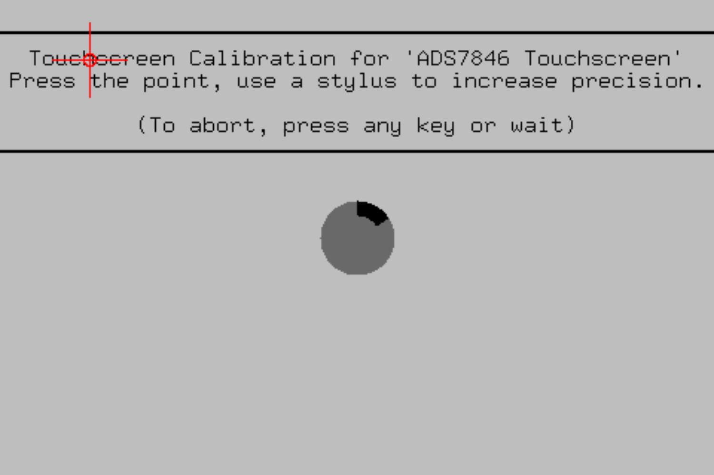
4 か所タップすると、キャリブレーションの結果が出力されます。
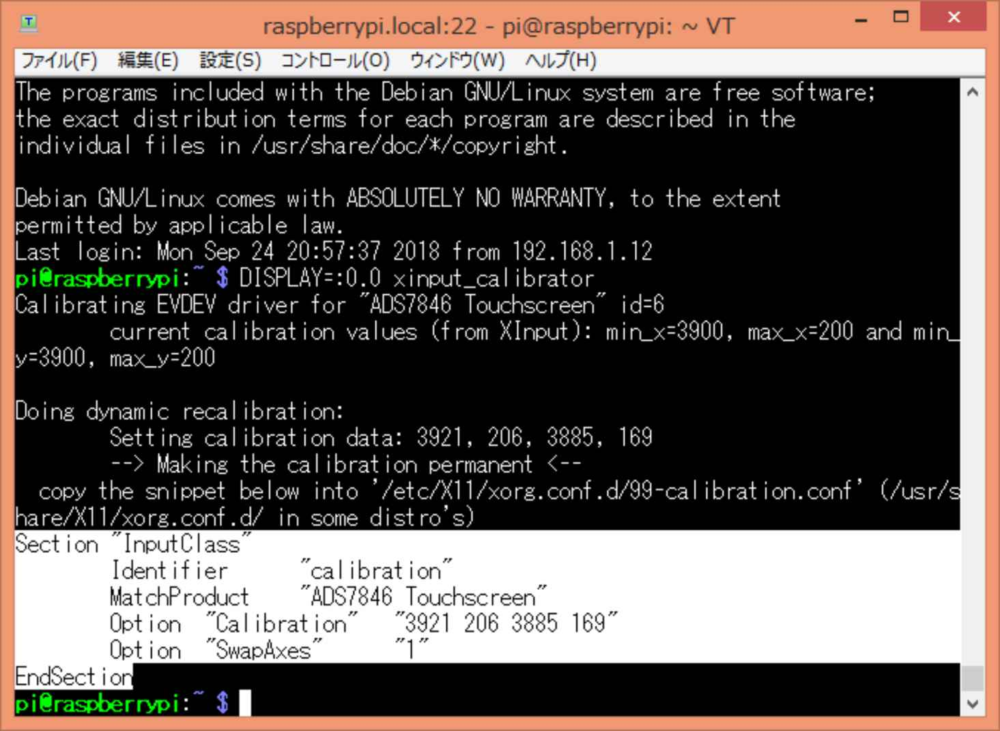
結果 を /usr/share/X11/xorg.conf.d/99-calibration.con f に書き込みます。
|
sudo vi /usr/share/X11/xorg.conf.d/99-calibration.conf |
例：
|
Section "InputClass" Identifier "calibration" MatchProduct "ADS7846 Touchscreen" Option "Calibration" " 3921 206 3885 169 " Option "SwapAxes" "1" EndSection |
再起動して終了です。
5.2 3. 5 イン チ SPI LC D （その１）
SP I 接続 の 3. 5 イン チ LC D のセットアップ例です。使用し た LC D は一般的なものですが、 タッチパネルの割り込みピンがSPI1（Auxiliary SPI）のCS1とぶつかっているため、SPI1（Auxiliary SPI）を使うとタッチパネルが反応しなくなります。SPI1（Auxiliary SPI）を使う場合は後述の 3. 5 イン チ SPI LC D （その２） がお勧めです。
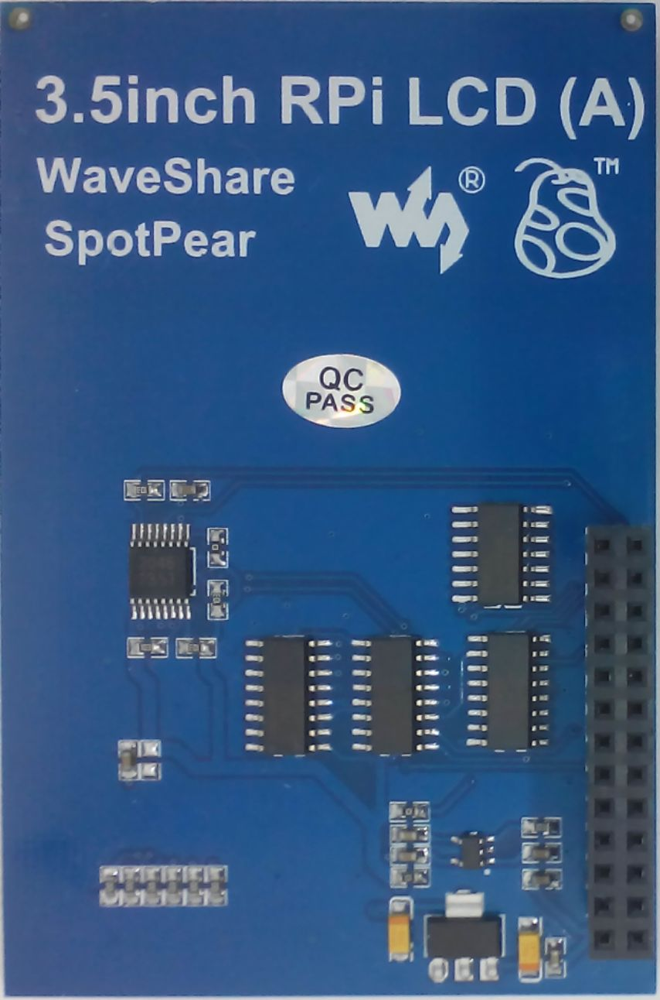
Tera Ter m か ら SS H で接続して 、 SP I 接続 の 3. 5 イン チ LC D をセットアップします 。 GPI Oの 4 0 ピンを引き出していないため 、 GPI O を使うためには何らかの工夫が必要です。
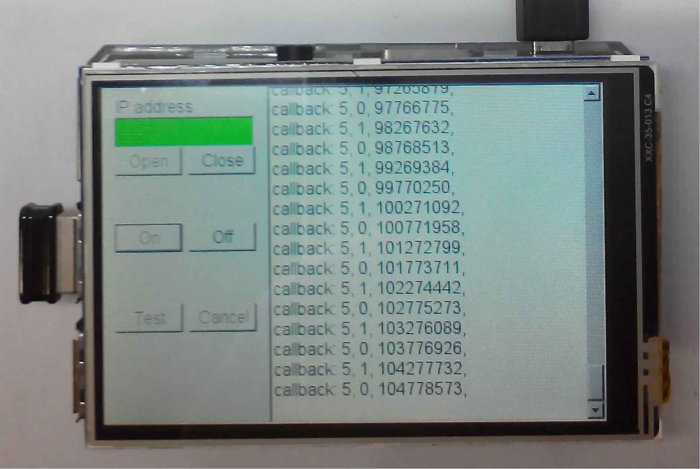
使用し た LC D は タッチパネルの割り込みピンがBCM 17でSPI1（Auxiliary SPI）のCS1とぶつかっているため、SPI1（Auxiliary SPI）を使うとタッチパネルが反応しなくなります。SPI1（Auxiliary SPI）を使う場合はBCM 17、BCM 18を使わないLCDを選択する必要があります。
/etc/modules-load.d/fbtft.con f を編集して、必要なカーネルモジュールをロードするようにします。
|
sudo vi /etc/modules-load.d/fbtft.conf |
/etc/modules-load.d/fbtft.con f の内容：
|
spi-bcm2835 flexfb fbtft_device |
/boot/cmdline.txtを編集して、コンソールの設定を変更します。
|
sudo vi /boot/cmdline.txt |
/boot/cmdline.txtの行末に追加：
|
fbcon=map:1 fbcon=font:ProFont6x11 |
/usr/share/X11/xorg.conf.d/99-fbturbo.con f を編集して、画面の出力先を変更します。
|
sudo vi /usr/share/X11/xorg.conf.d/99-fbturbo.conf |
fb 0を fb 1 に変更：
|
Option "fbdev" "/dev/ fb1 " |
デバイスツリー オーバーレイをインストールします。
|
git clone https://github.com/swkim01/waveshare-dtoverlays.git sudo cp waveshare-dtoverlays/waveshare35a-overlay.dtb /boot/overlays/waveshare35a.dtbo |
/boot/config.tx t を編集して、 デバイスツリー オーバーレイを有効にします。
|
sudo vi /boot/config.txt |
/boot/config.tx t に追加：
|
dtoverlay=waveshare35a:swapxy=1 |
タッチパネルを設定します。
|
sudo apt-get install xserver-xorg-input-evdev sudo cp -rf /usr/share/X11/xorg.conf.d/10-evdev.conf /usr/share/X11/xorg.conf.d/45-evdev.conf sudo apt-get install xinput-calibrator |
仮のキャリブレーション結果 を /usr/share/X11/xorg.conf.d/99-calibration.con f に書き込みます。
|
sudo vi /usr/share/X11/xorg.conf.d/99-calibration.conf |
仮のキャリブレーション結果：
|
Section "InputClass" Identifier "calibration" MatchProduct "ADS7846 Touchscreen" Option "Calibration" "3900 200 200 3900" Option "SwapAxes" "0" EndSection |
再起動します。
|
sudo reboot |
xinput_calibrato r を実行します。
|
DISPLAY=:0.0 xinput_calibrator |
4 か所タップすると、キャリブレーションの結果が出力されます。
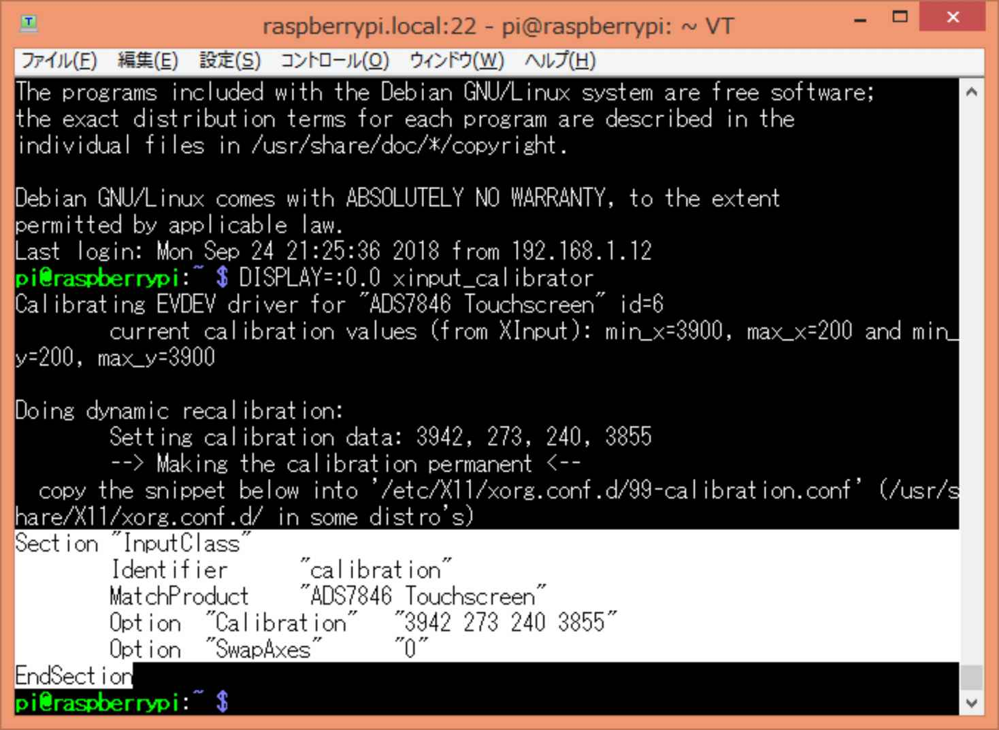
結果 を /usr/share/X11/xorg.conf.d/99-calibration.con f に書き込みます。
|
sudo vi /usr/share/X11/xorg.conf.d/99-calibration.conf |
例：
|
Section "InputClass" Identifier "calibration" MatchProduct "ADS7846 Touchscreen" Option "Calibration" " 3942 273 240 3855 " Option "SwapAxes" "0" EndSection |
再起動して終了です。
5.3 3. 5 イン チ SPI LC D （その２）
SP I 接続 の 3. 5 イン チ LC D のセットアップ例です。 タッチパネルの割り込みピンがSPI1（Auxiliary SPI）のCS1とぶつからないため、SPI1（Auxiliary SPI）とタッチパネルが共存できます。
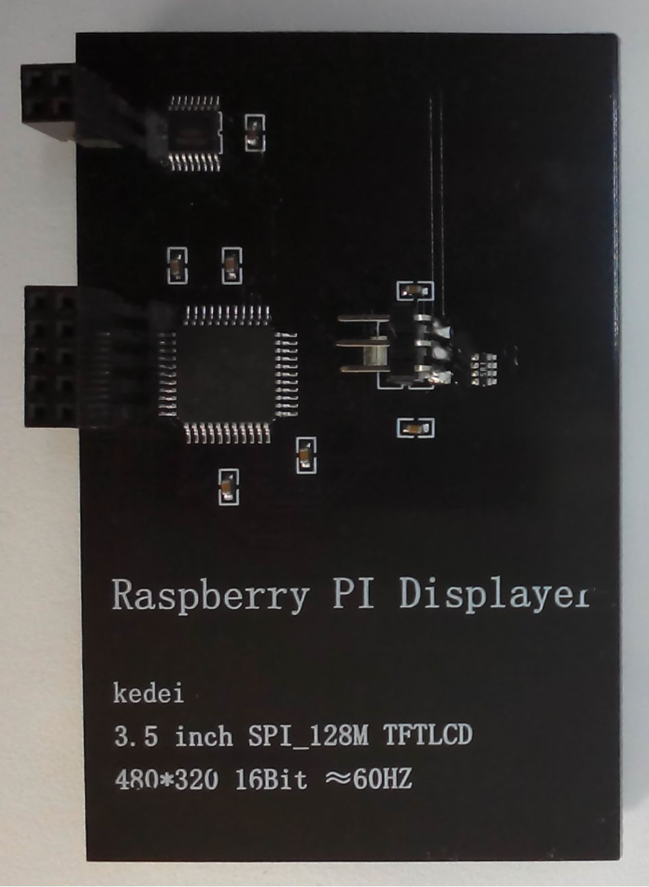
Raspberry P iの 3.3 V、 5 V ピン は LC D のコネクタで塞がってしまうので 、 LC D の三端子レギュレータにヘッダーピンをはんだ付けしておくと便利です。
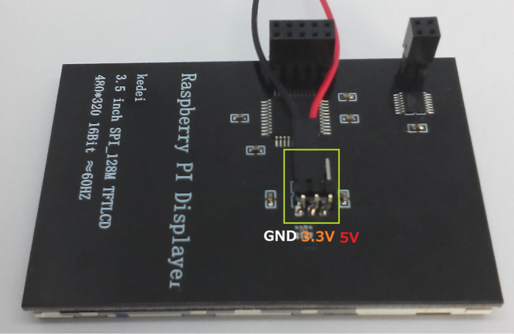
Tera Ter m か ら SS H で接続して 、 SP I 接続 の 3. 5 イン チ LC D をセットアップします。
メーカー提供のスクリプト等を取得します。
|
cd sudo git clone https://github.com/kedei/LCD_driver |
LCD35_sho w を編集して 、 /boot/config.tx t を差替えないようにします。
|
sudo chmod -R 777 LCD_driver cd LCD_driver vi LCD35_show |
６行目の行頭 に# を追加してコメントアウト：
|
#sudo cp ./boot/35_config_128M.txt /boot/config.txt |
コメントアウトした行の代わり に /boot/config.tx t を直接編集します。
|
sudo vi /boot/config.txt |
/boot/config.tx t の行末に追加：
|
display_default_lcd=1 dtoverlay=kedei |
LCD35_sho w を実行します。
|
./LCD35_show |
パラメータで画面の向きを指定できます
|
./LCD35_show 90 ./LCD35_show 180 ./LCD35_show 270 |
自動的に再起動します。
5.4 KIOS K モード
自動的にカーソルを消すようにします。
|
sudo apt-get install unclutter |
自動的 に GU I アプリケーションを起動するように 、 ~/.config/lxsession/LXDE-pi/autostar t を編集します。
|
vi ~/.config/lxsession/LXDE-pi/autostart |
~/.config/lxsession/LXDE-pi/autostar t の内容：
|
@lxpanel --profile LXDE-pi @pcmanfm --desktop --profile LXDE-pi @xscreensaver -no-splash
@xset s off @xset -dpms @xset s noblank @unclutter @mono /home/pi/Projects/PigpiodIfTest-master/PigpiodIfTest/bin/Debug/PigpiodIfTest.exe |
GU I アプリケーションを全画面表示で起動するように 、 ~/.config/openbox/lxde-pi-rc.xm l を編集します。
|
vi ~/.config/openbox/lxde-pi-rc.xml |
ファイルの最後の方に追加：
|
... # end of the example -->
<application title="Pigpiod C# I/F Test"> <fullscreen>yes</fullscreen> </application>
</applications> </openbox_config> |
これで起動時に全画面表示で実行されるようになりました 。 Alt+F1 1 キーで全画面表示を解除できます。
6 Read only Root-FS
Raspberry P i の使い方によっては、シャットダウンをせずに電源を切りたくなります 。 S D メモリ上のファイルシステム を Read onl y にしてしまいましょう。
6.1 Read only Root-F S のセットアップ
「 Read-only Root-FS with overlayfs for Raspia n 」に書かれている手順に従い 、 SS H で接続し た Tera Ter m からコマンドを入力します。再起動する と S D メモリ上のファイルシステム が Read onl y になっています。
https://github.com/josepsanzcamp/root-ro
|
cd /home/pi sudo bash
echo Installing all dependencies apt-get install git rsync gawk busybox bindfs
echo Disabling swap dphys-swapfile swapoff dphys-swapfile uninstall update-rc.d dphys-swapfile disable systemctl disable dphys-swapfile
echo Cloning repository git clone https://github.com/josepsanzcamp/root-ro.git
echo Doing the setup rsync -va root-ro/etc/initramfs-tools/* /etc/initramfs-tools/ mkinitramfs -o /boot/initrd.gz echo initramfs initrd.gz >> /boot/config.txt
echo Restarting RPI reboot |
書き込みはメモリ上のファイルシステムに対して実行されるので、「大量の書き込みはできない」「書き込んだ内容は電源遮断時に消えてしまう」ことになります。その代りいつでも電源を切ることができます。
6.2 書き込み可にする
/boot/config.tx t の 最後の行をコメントアウトして 再起動すると、 書き込み可能になります。
|
sudo mount -o remount,rw /mnt/boot-ro sudo vi /mnt/boot-ro/config.txt |
最後の行をコメントアウトして再起動：
|
#initramfs initrd.gz |
6.3 書き込み禁止に戻す
/boot/config.tx t の 最後の行のコメントアウトを外して 再起動すると、 書き込み禁止に戻ります。
|
sudo vi /boot/config.txt |
最後の行のコメントアウトを外して再起動：
|
initramfs initrd.gz |